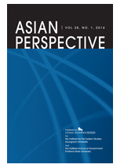

收录于合集

简 介
**
**
【作者简介】 夏亚峰 ( Yafeng Xia)为美国长岛大学历史学系教授、华东师大威尔逊中心冷战研究美国工作室主任。
【文章来源】
Asian Perspective(ISSN:0258-9184)
October-December 2018
Volume. 42, No. 4, pp.485-500
【期刊介绍】

Asian perspective创立于1999年，为每季度出版的学术期刊，自2011年开始，由Lynne Rienner Publisher负责出版相关事宜，关注主题为东亚地区议题分析。
【期刊网址】
http://journals.rienner.com/loi/aspr
【 整理 】高嘉琳
【审核】 李逸成、庞林立
【提纲】
摘要
历史文件、研究方法及当代课题
当代中国地缘互动关系及其内涵
中国地缘互动关系未来研究展望及可能的发展方向
**
**
摘要
中国边境接壤国家数比其他国家多上许多，和下列十九个国家相连：阿富汗、不丹、缅甸、印度、哈萨克斯坦、吉尔吉斯斯坦、老挝（寮國）、蒙古、尼泊尔、朝鲜（北韓）、巴基斯坦、俄罗斯、塔吉克斯坦以及越南。此外，中国的领海也和八个国家相接：文莱（汶萊）、印尼、日本、马来西亚、朝鲜、菲律宾、南韩、以及越南。中国的邻国有如印度、日本及俄罗斯的强国 (big state, powerful state)；也有如印度、朝鲜、巴基斯坦及俄罗斯等核大国(nuclear power)；还有如阿富汗相对不稳定的国家(unstable state)。中国位处世界三大经济板块区之一当中，且周遭强国、核大国的密度较其他地区高。
中国在21世纪跃升国际大国地位，引起许多针对中国崛起对于国际政治稳定性及对美国国际地位潜在影响的讨论。至今，中国已成为亚太地区事务的决定性因素之一，因为中国崛起对于其周遭国家的政策规划造成了冲击。在21世纪初，对于中国崛起的疑虑，和中国与邻国领土、领海的争议（如2017年7月中印在洞朗的冲突，或中日历来对于钓鱼岛主权的解读，及南海地区纠纷），以及其邻近地区浮现的各项议题（如朝鲜核问题、2016年11月缅甸北武装冲突、2017年8月在缅西若开邦的恐怖攻击），许多可追溯到冷战时期的冲突事件，皆造成中国和邻国关系的复杂化。中国崛起是否会改变其与邻国间的互动模式？中国历来与周遭国家的互动愈趋频繁，其互动关系对于国际利益影响亦渐增，因此各国领导人、政策制定者以及学者都期望得以了解并预测中国近期及未来与邻国的可能互动模式。
过去二十年以来，中国在冷战时期地缘互动关系的实证研究渐渐转化为当代中国外交史研究领域、甚至是当代中国历史研究领域的重要准则。随着西方思潮推进，中国政府与邻国互动的实际需求，以及国际上学者关注程度的提升，促使越来越多相关档案的公布。与国际上学者相比，中国学者在历史文件的取得、使用上更具优势。他们也试图提出理论架构来解释上述历史。在这个论文中，首先将探讨 中国冷战时期地缘互动关系实证研究兴起的背景 ，并会 提出过去 20 年来由中国学者发布的代表性作品作为介绍 。接着探讨这5篇文章的 主要论点及贡献 ，最后再以 此领域未来可能的发展方向 作结。
历史文件、研究方法及当代课题
中国学术界关于其地缘互动关系的研究几乎皆着重于中国外交史。然而这些研究通常是建议性质报告、时事分析，或是国家决策评论，极少数会采用直接切入探讨的方式。基于各种原因，这些研究无法确切理解特定议题如何收到历史因素影响，因此没办法为政策提供洞见。他们所提出的建议仅止于战术层面而无法提升至战略层面。到了二十一世纪，发生许多重大变化，大多都体现对于中国、研究目标国家官方公开文件的利用，研究领域新世代成员的注入，以及相较更为稳定研究团队的成形。因此，中国学者发表了许多高质量研究，当中不乏得到国际学者赞誉的成果。
作者将此段分为三部分讨论：
一、 讨论中国政府官方公开的历史文件 ：举出2004到2008年，中国外交部公开了1949到1965年的部分与邻国交涉的外交档案，涉及层面包含政治、经济、边境争议问题不等。此外，外交部还另外发布了关于1954年日内瓦会议、中国与他国建交后外交行为、1955年万隆会议的官方文件。并就此作出讨论
二、 中国邻国官方文件的参照 ：提出中国学者今年亦有参照邻国官方公开文件的倾向，如俄罗斯、澳大利亚、新加坡、蒙古、南韩、日本、印尼、马来西亚、泰国、越南、老挝、柬埔寨、缅甸、印度等国家。有时也会参考美国、英国的档案，因其过去曾影响中国对外关系。这些档案的相参照提供学者得以更加全面理解事件的机会，并以此为基础分析中国与邻国的互动关系。
三、 研究方法的采用及研究进展 ：就研究方法而言，中国学者大多皆采用西方学术界主流方法及概念；然在研究范畴及方向则渐发展出不同的模式。作者讨论1990年代至今，因官方文件的发表，促使中国学者此领域研究的推进。虽然中中国与邻国互动关系的研究进展极大部分仰赖中国学者的贡献，然中国政府的推动、引导也不当忽略，作者又针对此提出一些看法及佐证。
当代中国地缘互动关系及其内涵
近年来，中国学者从事许多以冷战时期中国对外政策为基础的宏观、实证研究。当中中苏关系、中朝关系及中印关系的相关研究最受国际关注及赞誉。作者指出上述研究领域当中的指标性人物，简述上述研究类别的总体概况。作者将此段分为四部分讨论：
一、 中朝关系 ：作者指出沈志华教授为此领域之指标人物，并概述此领域研究状况、方式、和成果。
二、 中印关系 ：作者提出戴超武教授在此领域的研究主题甚广，同样亦概述此领域研究状况、方式和成果。
三、 中缅关系 ：作者在此段仅略提及中缅关系之研究，举出此领域研究者的概要成果
四、 当代中国地缘互动关系议题 ：作者在此部分举出五篇研究当代中国地缘互动关系的研究论文为例。这五篇论文以官方公开文件为基础，首先厘清历史事件中中国与研究目标国家的互动关系；接着再试图借由这些历史事件对于21世纪中国与其互动关系的影响作出解释。而此五篇论文分别研究 中日关系 、 中缅关系 、 中越关系 、 中国与中亚国家间关系 、 中泰关系 。
中国地缘互动关系未来研究展望及可能的发展方向
随着中国外贸活络度提升、政治上调整、以及学术上的进展，中国地缘互动关系的研究仍是中国外交史及冷战时期历史的优先考量。有很大的可能性，有关冷战时期中国与邻国互动的研究会持续推进。作者将此段分为三部分讨论：
一、 中国学者相关资料收集的进展 ：此部分作者概述资料取得、整理，建构资料库过程，以及资料运用。
二、 研究机构资金的增加 ：此部分作者提出基于中国经济成长，各单位提升对于学术研究的资金支持。
三、 今年中国大学内研究机构的成立 ：此部分作者提出，今年来中国大学成立许多研究中心以研究中国邻国及邻近地区的相关事务，并整合相关研究成果。
点击左下角“ 阅读原文 ”获取原文pdf版
声明
此文为国政学人微信公众平台外文编译系列文章之一，由国政学人编辑首发，不代表本平台观点。欢迎转发分享，转载请务必注明来源。如有问题，请联系guozhengxueren@163.com
更多阅读
国政学人 （ID：guozhengxueren)
为方便学人及时阅读高质量文章
别忘把国政学人设置 星标 哦~